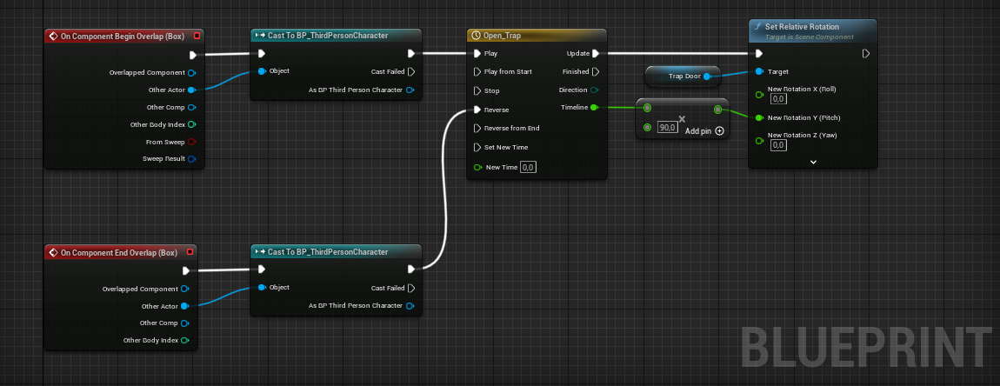

Julie CLAVARON (GDJulie)
Ma contribution sur le projet DaVinci
J'ai été chargée de la réalisation du mécanisme de trappe, ainsi que du travail d'UV et texture sur le mesh 3D.
Dépliage UVs sur Blender

Texturing sur Substance Painter 3D
Trappe importée dans Unreal Engine 5

Blueprint du mécanisme d'ouverture/fermeture de la trappe